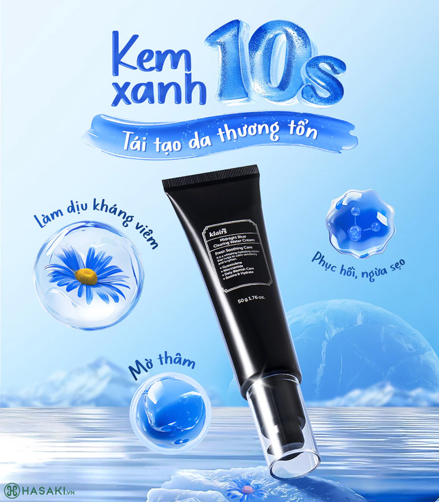
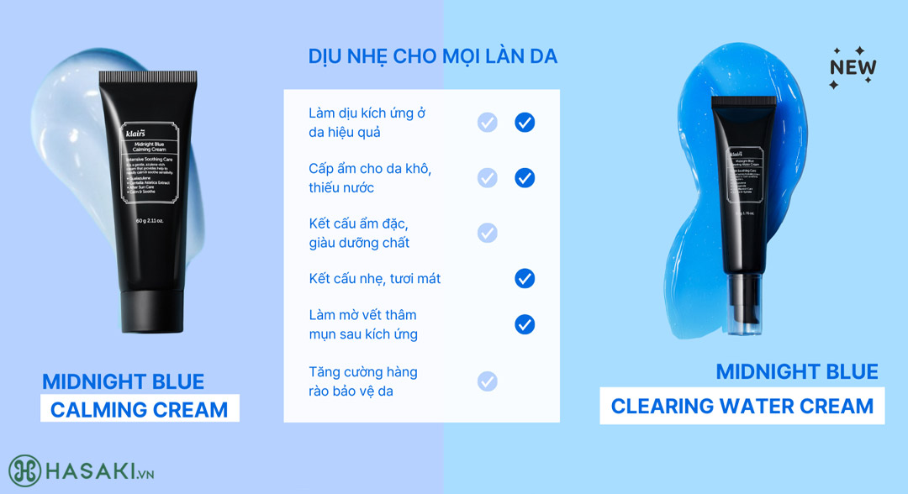

Kem Dưỡng Ẩm Klairs Làm Dịu & Phục Hồi Da Ban Đêm 50g
294.000 ₫
Giá thị trường: 505.000 ₫ - Tiết kiệm: 211.000 ₫ (42%)
Dung tích: 50g
Bạn muốn nhận hàng trước 18h hôm nay (Miễn phí). Đặt hàng trong 56 phút tới và chọn giao hàng 2H ở bước thanh toán.
Kem Dưỡng Ẩm Klairs Midnight Blue Cream là dòng kem dưỡng dành cho da nhạy cảm đến từ thương hiệu Klairs – Hàn Quốc. Sản phẩm chứa Guaiazulene chiết xuất từ dầu hoa cúc giúp làm dịu da kích ứng, kết hợp với chiết xuất rau má giúp cấp ẩm và hỗ trợ phục hồi da tổn thương.
- Tái tạo da tổn thương
- Kết cấu kem màu xanh dịu nhẹ, thẩm thấu nhanh


Kem dưỡng Klairs Midnight Blue Cream phù hợp với:
- Da nhạy cảm
- Da bị kích ứng do môi trường
- Da tổn thương sau khi nặn mụn hoặc treatment
- Da thiếu ẩm, thiếu nước
Ưu điểm nổi bật:
- Guaiazulene giúp làm dịu và phục hồi da tổn thương.
- Chiết xuất rau má giúp giảm kích ứng và tái tạo da.
- Hyaluronic Acid giúp cấp ẩm cho da mềm mịn.
- Ceramide 3 giúp củng cố hàng rào bảo vệ da.
- Không chứa cồn, paraben và hương liệu.
Thông số sản phẩm
| Barcode | 8809572893018 |
| Thương Hiệu | Klairs |
| Xuất xứ thương hiệu | Hàn Quốc |
| Nơi sản xuất | Korea |
| Loại da | Da nhạy cảm |
| Dung tích | 50g |
| Đặc tính | Làm dịu và phục hồi da |
Hỗ trợ khách hàng
Hotline: 0845628919
(Miễn phí 08-22h kể cả T7, CN)
Hướng dẫn đặt hàng
Phương thức thanh toán
Chính sách đổi trả
Cập nhật khuyến mãi
DANH MỤC SẢN PHẨM
Mỹ phẩm High-End
Chăm sóc cá nhân
Băng vệ sinh
Khử mùi
Nước hoa
Nước hoa nữ
Nước hoa nam